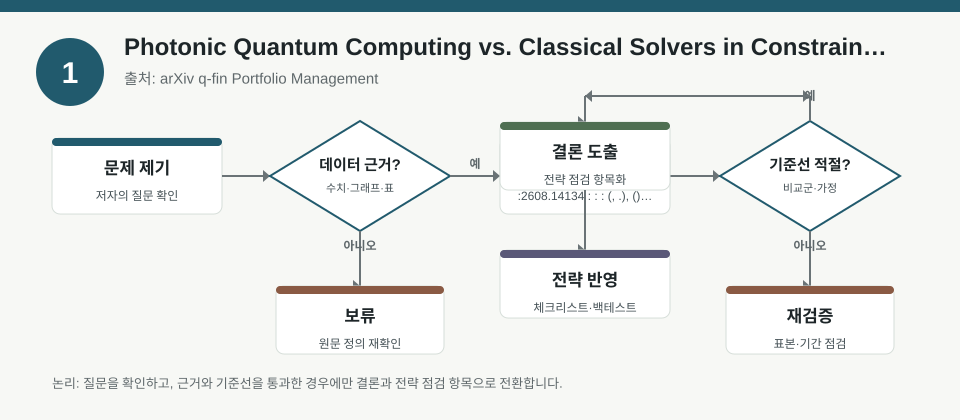
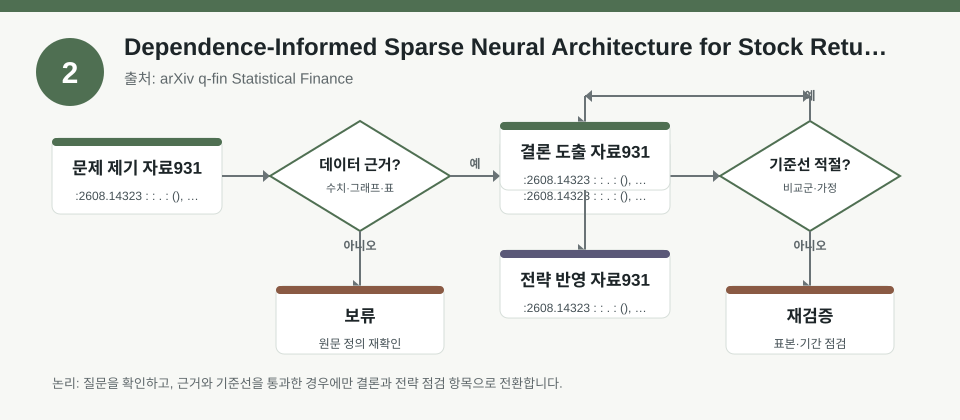
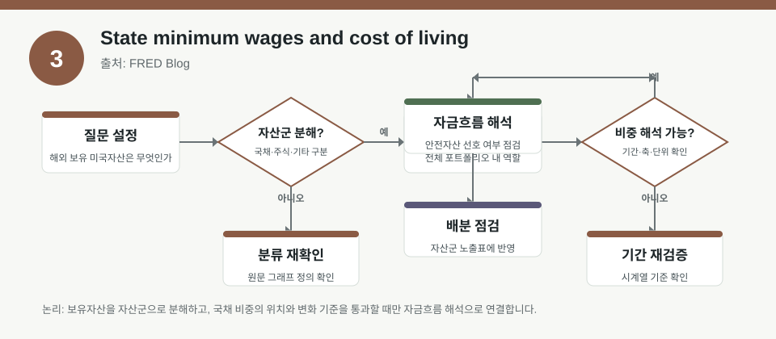

핵심 요약
- 결론: 최신 자료들은 팩터 노출, 제약조건, 데이터 의존성, 거시 비용요인을 함께 봐야 포트폴리오 해석이 정확해진다는 점을 강조합니다.
- 원칙: 수치와 성과는 원문에서 검증하고, 한국 투자자는 KOSPI/KOSDAQ 업종 편중, 환율, 금리, 물가, 변동성, 규제 리스크 관점으로만 점검해야 합니다.
주목할 자료
| 번호 | 자료 | 출처 | 원문 | 핵심 내용 | 데이터 포인트 | 리스크/한계 |
|---|---|---|---|---|---|---|
| 1 | Photonic Quantum Computing vs. Classical Solvers in Constrained Factor Portfolio Optimization | arXiv q-fin Portfolio Management | 원문 보기 | 제약이 있는 팩터 포트폴리오 최적화에서 양자·고전·딥러닝 해법을 비교한 실증 연구입니다. | 제약조건 반영 여부, 해법별 목적함수 근사, 백테스트 성능 비교를 확인해야 합니다. | 샘플 기간, 제약식 정의, 거래비용, 계산시간, 재현성은 원문 검증이 필요합니다. |
| 2 | Dependence-Informed Sparse Neural Architecture for Stock Return Prediction | arXiv q-fin Statistical Finance | 원문 보기 | 종목 특성 간 의존성을 반영해 희소 신경망 구조를 설계하고 수익률 예측력을 해석하려는 연구입니다. | 팩터 상관 구조, clique forest 기반 연결성, 모델 복잡도와 해석 가능성의 균형을 봐야 합니다. | 표본 외 일반화, 과최적화, 특성 선택 편향, 산업·시점별 안정성은 확인이 필요합니다. |
| 3 | State minimum wages and cost of living | FRED Blog | 원문 보기 | 미국 주별 최저임금과 생활비 차이를 통해 지역별 비용 구조가 동일하지 않음을 보여주는 거시 해설입니다. | 임금 수준, 물가 수준, 지역별 생활비 격차가 기업 마진과 소비 여력에 미치는 경로를 점검해야 합니다. | 한국 적용 시 지역·산업별 임금 전가율, 환율, 인건비, 규제 차이는 별도 검증이 필요합니다. |
자료별 상세
1. Photonic Quantum Computing vs. Classical Solvers in Constrained Factor Portfolio Optimization

- 핵심: 제약이 많은 팩터 포트폴리오에서는 계산 방식 자체보다 제약 충족, 목적함수 품질, 거래비용 반영이 해석의 중심입니다.
- 데이터 포인트: 양자 annealer, MIP solver, 딥러닝 접근의 성과 차이는 백테스트 설정과 제약식 정의에 크게 좌우됩니다.
- 리스크: 성과 비교가 같아 보여도 샘플 길이, 리밸런싱 주기, 비용 가정, 실행 가능 해가 동일한지 확인해야 합니다.
- 투자전략 반영 예시: 한국 투자자는 KOSPI/KOSDAQ 섹터 비중, 대형주/중소형주 유동성, 환율 민감도, 금리 민감도, 규제 업종 노출을 체크리스트로 두고 포트폴리오 제약을 먼저 정리할 수 있습니다.
- 실행 예시: 기존 팩터 백테스트에 거래비용, 업종 상한, 종목 최대비중, 환노출 한도를 넣은 뒤 결과가 얼마나 달라지는지 비교해 보세요.
2. Dependence-Informed Sparse Neural Architecture for Stock Return Prediction

- 핵심: 예측 모델의 깊이보다 특성 간 의존성을 어떻게 구조화했는지가 해석 가능성과 안정성에 더 직접적일 수 있습니다.
- 데이터 포인트: MFCF로 뽑은 clique 구조는 팩터군의 연결성을 보여주며, 희소 신경망은 과도한 복잡성을 줄이는 방향입니다.
- 리스크: 특성 의존성은 표본 기간과 시장 국면에 따라 바뀌므로, 고정 구조를 장기간 일반화하면 왜곡이 생길 수 있습니다.
- 투자전략 반영 예시: 한국 투자자는 가치·성장·퀄리티·모멘텀·변동성 팩터가 KOSPI와 KOSDAQ에서 어떻게 다르게 묶이는지 점검해 업종 편중 여부를 확인할 수 있습니다.
- 실행 예시: 팩터 상관행렬을 분기별로 재추정하고, 고상관 팩터를 묶어 중복 노출 여부를 확인하는 스크리닝 표를 만들어 보세요.
3. State minimum wages and cost of living

- 핵심: 임금과 생활비의 지역 격차는 기업 비용, 소비 여력, 마진 압력의 출발점이므로 거시 해석에서 지역별 차이를 분리해야 합니다.
- 데이터 포인트: 최저임금 수준만 보지 말고, 물가와 생활비를 함께 봐야 실제 구매력과 비용 부담을 해석할 수 있습니다.
- 리스크: 미국 주 데이터는 한국 시장에 그대로 이식할 수 없고, 업종별 임금 전가율과 환율 영향은 별도 확인이 필요합니다.
- 투자전략 반영 예시: 한국 투자자는 내수 소비, 음식료, 유통, 물류, 플랫폼, 리테일, 인건비 민감 업종의 비용 전가 가능성을 점검하는 데 활용할 수 있습니다.
- 실행 예시: 보유 섹터별로 인건비 비중, 가격 전가력, 원/달러 환율 영향, 금리 민감도, 규제 부담을 한 장의 체크리스트로 정리해 보세요.
팩터·리스크·포트폴리오 관점
- 핵심: 세 자료 모두 성과보다 구조를 먼저 봐야 하며, 제약조건, 특성 의존성, 물가·임금 같은 입력 가정이 결과를 좌우합니다.
- 검수: 백테스트는 거래비용, 유동성, 리밸런싱, 생존편향, 표본 외 검증을 확인해야 하고, 거시 자료는 한국 시장에의 직접 적용 가능성을 따로 검증해야 합니다.
정리
- 결론: 포트폴리오 해석은 팩터 신호와 리스크 제약, 그리고 거시 비용요인의 결합으로 봐야 합니다.
- 다음 확인: 원문에서 성과 수치, 표본 기간, 비용 가정, 제약식, 그리고 한국 시장 적용 시의 한계를 먼저 확인하세요.